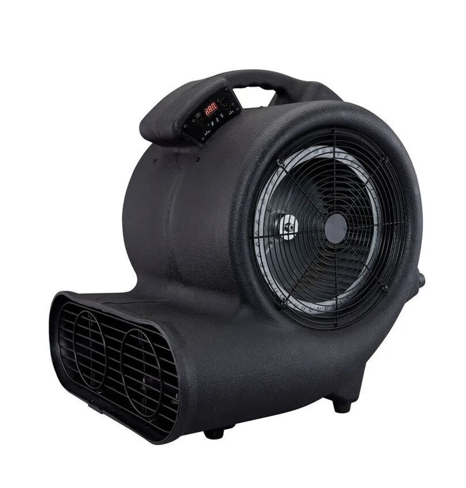

Сетевичок
Каталог
Главная

Antari AF-5R
Артикул: ANT-A9021
112 000.00 руб
профес. сценический вентилятор, 735 Вт, DMX, 3 скорости, радио пульт ДУ
Категории: Вентиляторы, Antari, Вентиляторы
 Сетевичок
Сетевичок